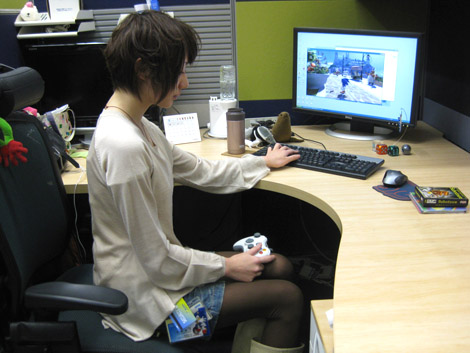
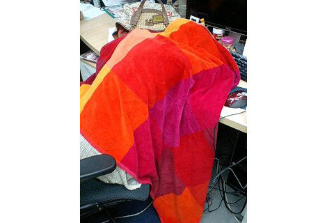

『セガ入社のきっかけのお話 (ヨシノ編)』
2009年01月13日
こんにちは、ヨシノです。
こんにちは！ マツバラです！
前回に引き続き、「セガに入社したきっかけ」を語っていきます！
今回はヨシノの話だね。
はーい。
まず、どこでセガを知ったの？
テレビのCM、かなあ……。
「かなあ」？
なんとなく知ってたっていうかんじ？
うん。
実は私は、コンピューターゲームやゲームセンターでは
あまり遊んでなかったのだ。
でも、アナログで遊ぶRPGがとても好きで
「人を楽しませる」「遊びをつくる」ことに
とても興味がありました。
趣味が渋いよね……
具体的に将来の夢が決まらないまま
就職活動をしていました。
そんなとき、セガのとある部長のお話を聞く機会があって
「セガって、面白そう！」と……
本当、『SWA』スタッフなのに
アクションゲームにあんまり関係ない理由で
セガに来たんだよね。
うん。
正直、『SWA』に入った当初は
ヘタすぎてどうしようかと思った。
今は少しはプレイできるようになってるけど
最初は……(笑)
いいのだ。
スタッフ全員「ソニック」が上手すぎると、
「ソニック」初心者の方に遊んでもらえるゲームを作るのが難しいから。
序盤ステージを作る先輩に呼ばれて
テストプレイをすることも多かったよ。
「ヨシノがクリアできるなら難しすぎることはないな」って
基準になってたみたい。
確かに。
私のつくったステージもテストプレイ頼んだっけ……。
それに、私の担当はゲーム中の文章や台詞。
働いているうちに、
ソニックのクールでわがままでポジティブなキャラクター性に
どんどん惚れこんでいったよ。
では、そんなヨシノにとって
ソニックとは！
ソニックは、
私にどんどん新しい世界を見せてくれる
自由で刺激的なヒーローです。

自席にて『SWA』タウンを見るヨシノ。
前回・今回と、真面目な更新が続いたね。
ソニックへの思いを、ってことだったし……。
なんだかんだ言って、私たちは
「ソニック」が大好きだよね。
もちろん！！
ゲーム性も、キャラクター性も
ほかにないくらい魅力的だと思うよ！
……しかし私事だけでは申し訳ないので
「ハミだしブログ」らしく
最後に何かハミだして終わりましょう。
え？
まだ何かあるの？
『SWA』開発修羅場中に
私が隠し撮・・・いえ、撮影した
とある女子社員の席です。
どれどれ～？

苛酷な『SWA』プロジェクト末期。
途切れることのない開発業務に、ついに体力の限界を迎え、
毛布をかぶって眠るMバラさんです。
……！！
だから、こんなの
いつの間に撮ったの！？
日時: 2009年01月13日 16:00 | パーマリンク


 ソニックを愛する、元気な『SWA』2年目プランナー。
ソニックを愛する、元気な『SWA』2年目プランナー。 マイペースな『SWA』2年目プランナー。
マイペースな『SWA』2年目プランナー。
 ご意見・ご要望はこちら
ご意見・ご要望はこちら RSS
RSS